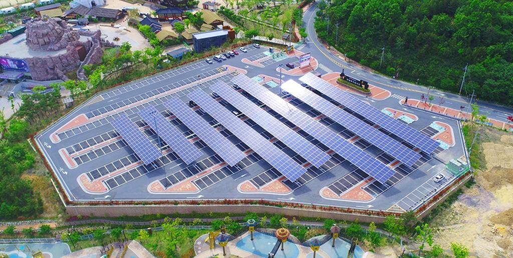

김해시, 공영주차장 14곳·정수장에 태양광…발전 수익 재투자하는 재정 순환 구조 만든다

2028년까지 공영주차장 2,700kW 설치, 7곳은 직영·7곳은 민간 임대…삼계정수장 500kW는 12월 준공 목표
김해시가 공영주차장과 정수장 같은 공공 부지에 태양광 발전설비를 세우고, 여기서 나온 수익을 새 발전설비와 유지관리에 다시 쓰는 에너지 재정 순환 구조를 만든다. 시는 2028년까지 공영주차장 14곳에 모두 2,700kW 규모의 태양광을 설치할 계획으로, 7곳은 특별회계로 시가 직접 투자해 운영하고 나머지 7곳은 민간에 부지를 빌려주는 방식으로 초기 재정 부담을 덜기로 했다. 개정 재생에너지법에 따라 주차 면적 1,000㎡(80면) 이상 공영주차장은 10㎡당 1kW 규모의 발전설비를 갖춰야 하며, 시는 11월 28일까지 한국에너지공단에 설치·면제 계획서를 낼 예정이다. 이와 별도로 삼계정수장 정수지 5,440㎡에는 총사업비 9억9,300만 원을 들여 500kW 태양광을 짓는 공사가 시작돼 12월 준공을 목표로 하고 있다. 시는 이 설비가 연간 약 657MWh를 생산해 해마다 약 1억 원의 순수익을 내고, 10년 안팎에 투자비를 회수하며 온실가스를 연간 약 289tCO₂ 줄일 것으로 내다봤다. 성소희 김해시 전략산업과장은 수익을 재투자하는 선순환 체계를 키워 "청정에너지 자립도시 김해"를 완성하겠다고 말했다.
시민에너지 관점
공영주차장 2,700kW와 정수장 500kW에서 나오는 수익을 시 재정 안에서 다시 돌리겠다는 구상은 공공 부지의 햇빛을 공공의 자산으로 보는 의미 있는 출발이다. 다만 14곳 가운데 절반을 민간 임대로 돌리면, 그 부지에서 나는 수익은 임대료를 빼고 대부분 외부 사업자에게 돌아간다. 일본 나가노현 이이다시는 공공시설 지붕을 20년간 무상으로 빌려주고 시민이 세운 회사가 발전소를 짓게 했으며, 설립 초기 시민 476명이 두 달 만에 2억150만 엔을 모았다. 초기 재정 부담이 걱정이라면 민간 임대에 앞서 시민 출자와 협동조합에 먼저 문을 열어, 공공 부지의 수익이 시민의 몫으로 남게 해야 한다.
출처: 경남도민일보 2026-10-20 이수경 원문 보기
金海市、公営駐車場14カ所と浄水場に太陽光…発電収益を再投資する財政循環の仕組みづくり
2028年までに公営駐車場に2,700kWを設置、7カ所は直営・7カ所は民間賃貸…三渓浄水場の500kWは12月竣工を目指す
慶尚南道金海市が、公営駐車場や浄水場などの公共用地に太陽光発電設備を設け、そこで得た収益を新たな発電設備と維持管理に再び充てる「エネルギー財政循環」の仕組みをつくる。市は2028年までに公営駐車場14カ所に計2,700kW規模の太陽光を設置する計画で、7カ所は特別会計で市が直接投資・運営し、残る7カ所は民間に用地を貸し出す方式で初期の財政負担を抑える。改正再生可能エネルギー法により、駐車面積1,000㎡（80台分）以上の公営駐車場は10㎡当たり1kW規模の発電設備を備えなければならず、市は11月28日までに韓国エネルギー公団へ設置・免除計画書を提出する予定だ。これとは別に、三渓（サムゲ）浄水場の浄水池5,440㎡では総事業費9億9,300万ウォンを投じて500kWの太陽光を建設する工事が始まり、12月の竣工を目指している。市はこの設備が年間約657MWhを発電して毎年約1億ウォンの純利益を生み、10年前後で投資費を回収し、温室効果ガスを年間約289tCO₂削減すると見込む。ソン・ソヒ金海市戦略産業課長は、収益を再投資する好循環の体制を育て「クリーンエネルギー自立都市・金海」を完成させると述べた。
市民エネルギーの視点
公営駐車場2,700kWと浄水場500kWから生まれる収益を市の財政の中で循環させる構想は、公共用地の太陽を公共の資産とみなす意味ある一歩だ。ただし14カ所の半分を民間賃貸に回せば、その用地で生まれる収益は賃料を除いて大半が外部の事業者に流れる。長野県飯田市は公共施設の屋根を20年間無償で貸し、市民が設立した会社に発電所を建てさせ、設立初期には市民476人が2カ月で2億150万円を出資した。初期の財政負担が心配なら、民間賃貸より先に市民出資や協同組合に門戸を開き、公共用地の収益が市民の取り分として残るようにすべきだ。
出典: Gyeongnam Domin Ilbo 2026-10-20 Lee Su-kyung 原文を読む
金海市在14处公共停车场和净水厂建太阳能，打造发电收益再投资的财政循环结构
2028年前在公共停车场安装2,700kW，7处直营、7处租给民间；三溪净水厂500kW目标12月竣工
庆尚南道金海市将在公共停车场和净水厂等公共用地上建设太阳能发电设施，并把所得收益再用于新建发电设施和维护管理，打造"能源财政循环"结构。市政府计划在2028年前于14处公共停车场共安装2,700kW规模的太阳能，其中7处由市政府以特别会计直接投资运营，其余7处以出租用地给民间的方式减轻初期财政负担。根据修订后的可再生能源法，停车面积1,000平方米（80个车位）以上的公共停车场须按每10平方米1kW的规模配备发电设施，市政府计划在11月28日前向韩国能源公团提交安装及豁免计划书。另外，三溪净水厂5,440平方米的净水池上已开工建设500kW太阳能，总投资9亿9,300万韩元，目标12月竣工。市政府预计该设施每年发电约657MWh，每年带来约1亿韩元纯收益，约10年收回投资，并每年减少约289吨二氧化碳排放。金海市战略产业课长Seong So-hee表示，将发展收益再投资的良性循环体系，建成"清洁能源自立城市金海"。
市民能源视角
让公共停车场2,700kW和净水厂500kW的收益在市财政内部循环，是把公共用地上的阳光视为公共资产的有意义的开端。但如果14处中有一半交给民间租用，这些用地产生的收益除租金外大多会流向外部开发商。日本长野县饭田市把公共设施屋顶无偿出借20年，让市民设立的公司建设电站，创立初期就有476名市民在两个月内出资2亿150万日元。如果担心初期财政负担，就应在出租给民间之前先向市民出资和合作社敞开大门，让公共用地的收益留在市民手中。
来源: Gyeongnam Domin Ilbo 2026-10-20 Lee Su-kyung 查看原文
Gimhae to put solar on 14 public car parks and a water plant, recycling power revenue into new projects
2,700kW across car parks by 2028, seven city-run and seven leased to private firms; 500kW at Samgye water treatment plant targets December completion
Gimhae, South Gyeongsang Province, will install solar power on public land such as car parks and a water treatment plant and feed the revenue back into new generation and maintenance, creating what it calls an energy fiscal cycle. The city plans to install a total of 2,700kW of solar at 14 public car parks by 2028, investing in and running seven of them itself through a special account and leasing the other seven sites to private firms to limit upfront costs. Under the revised renewable energy act, public car parks of 1,000㎡ (80 spaces) or more must carry 1kW of generating capacity per 10㎡, and the city plans to submit installation and exemption plans to the Korea Energy Agency by November 28. Separately, construction has begun on a 500kW array over 5,440㎡ of basins at the Samgye water treatment plant, at a total cost of 993 million won, with completion targeted for December. The city expects the array to generate about 657MWh a year, earn about 100 million won in net revenue annually, pay back its cost in around 10 years and cut emissions by about 289tCO₂ a year. Seong So-hee, head of the city's strategic industry division, said Gimhae would build up the reinvestment cycle to become a self-reliant clean energy city.
Citizen Energy View
Recycling the revenue from 2,700kW of car-park solar and a 500kW water-plant array within the city budget is a meaningful start toward treating sunlight on public land as a public asset. But if half of the 14 sites are leased out, most of the revenue they generate, minus the rent, will go to outside developers. Iida in Nagano Prefecture, Japan, lent public building roofs free of charge for 20 years to a company set up by citizens, and early on 476 residents invested 201.5 million yen within two months. If upfront costs are the worry, the city should open the door to citizen investment and cooperatives before turning to private leases, so that the returns from public land stay with residents.
Source: Gyeongnam Domin Ilbo 2026-10-20 Lee Su-kyung Read the original